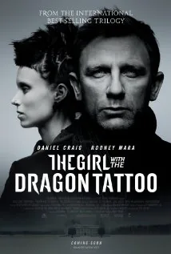

Blog · April 2, 2012
The Girl with the Dragon Tattoo?


I feel a little sick to my stomach right now. This is a generally happy blog, and we will get there; first let’s process what I just saw. Rape, murder, torture, lies, legal meltdown, alcoholics, embezzlement, infidelity and a general degree of psychopathy. When did this become entertainment? Perhaps I should ask when will society decide that this is not entertainment?
In the post-movie debate, friends were astonished that I did not not agree that this is a cinematic masterpiece.
“It’s art; it is the story of perseverence, of being strong in order to excel beyond the situation you find yourself in…”
No. Michelangelo is art. Voltaire is perseverance. Socrates is strength. The Girl with the Dragon Tattoo is the equivalent of Roman gladiator games: barbaric. And it wasn’t even funny.
Let’s have a throwback. What were you like as an undergrad? I used to frequent bars. I was in a sorority. I still have a number of cowgirl and 80’s costumes in my closet from our socials. I used to watch sitcoms and (embarrassing but true) “read” People magazine. Sometime around 2005 I started to think about who I was and what I was doing with my life. I started to realize that how I spend time – particularly free time – echoes what I find important and ultimately reflects who I am. I say this of course because movies are a free time expenditure.

The Girl with the Dragon Tattoo impacts its viewers through the emotion cycles triggered by detrimental aspects of humanity. Think about this: the film so derails our sense of normal that we (friends and I) actually experienced invigoration as a poor lost girl got revenge for being raped by tattooing “I am a rapist pig” across the chest of her attacker. I, too, found myself thinking “yeah!” and then I realized..this is like cheering in a gladiator ring. Romans in BC and movie viewers today build up hate for some despised character and together experience joy at his undoing.
Step back. Think. Is that cycle worth your precious time? Do you feel good after watching it? I don’t. I feel so ick that I’m blogging about it at 2 am. Life is but a glimpse if it is spent cheering destruction.
Create. Build something. I don’t watch cable TV but I do social networks. If I replace 30 minutes each day with learning something new, at the end of a year I’ve spent just over 7 extra days benefitting my mind (which is, after all, who I am).
Focus on the curious. I love to immerse myself in experiences that invigorate and renew my confidence in our species. Rather than solving hypothetical mysteries about a family of psychopaths, try laughing with friends over a lager while enjoying stealth mode history as seen in the delightful film How Beer Saved the World. Or experience the jaw-dropping Pixar story which includes interviews with minds like Steve Jobs, James Cameron, Andrew Stanton and the team that revolutionized cinema by making computers a tool for creatives. If you choose wisely, TV entertainment can compound the value of the time you spend watching it.

This is the final scene of The Girl with the Dragon Tattoo: (spoiler) the heroine 20-something woman who has been sleeping with the 40-something hero, who she also saved from the basement lair of a raging serial killer, throws away a present she bought him with money she embezzled from an embezzler as she watches him walk off hand in hand with his wife. Motorcycle off into the night. Annnnnd cut.
If you like this film, think why and share in the comments. Why do you like the movies that you like? Why do you spend free time the way you do? Think about how you perceive the things you enjoy relative to what your friends enjoy. Are you an outlier?
First published on my old blog, amyrobinson.wordpress.com, April 2, 2012.